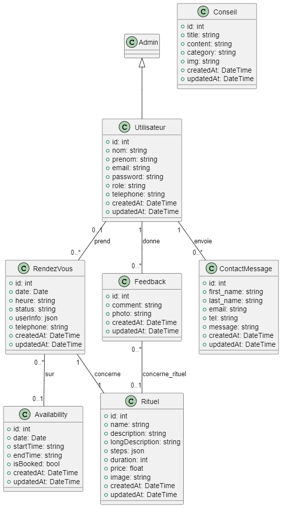
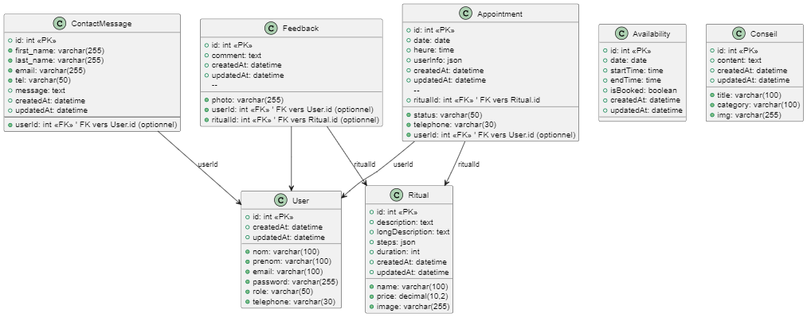
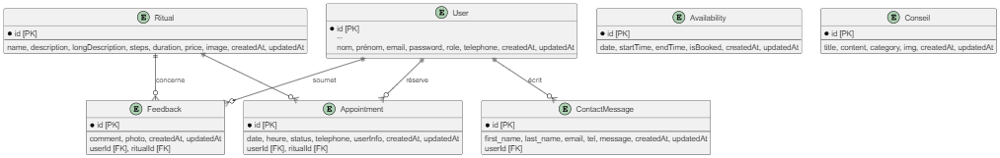
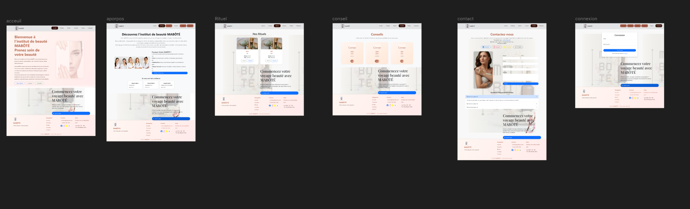
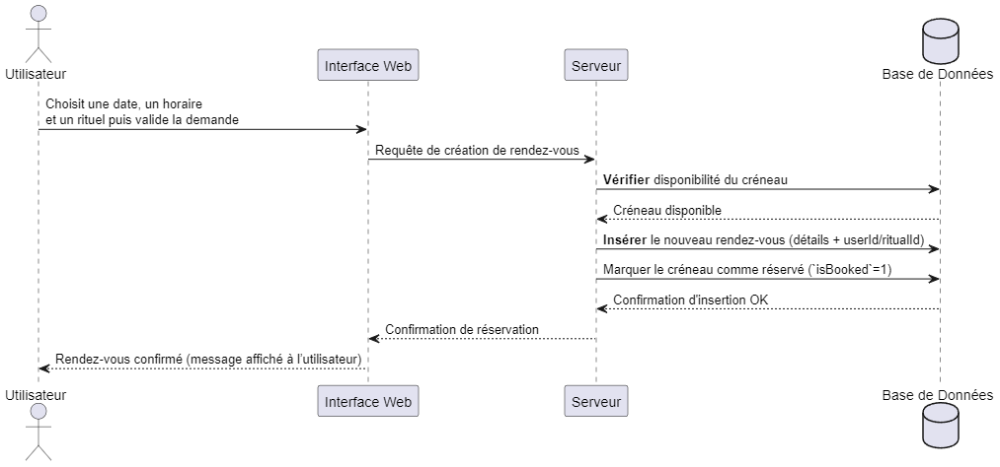
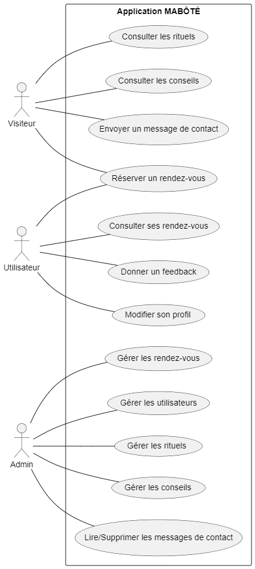
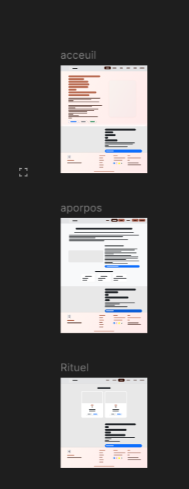
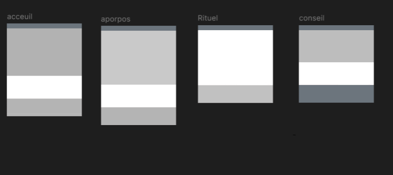

ℹ️ Astuce : Cliquez sur un titre dans la table des matières pour accéder directement à la section correspondante.
1. Résumé du projet
Le projet MABÔTÉ est une application web de prise de rendez-vous en ligne et de gestion de contenus développée dans le cadre d’un stage de fin de formation CDA (Concepteur Développeur d’Applications).
Il s’agit de doter un institut de beauté d’un outil numérique permettant à ses clients de planifier des rendez-vous 24h/24 et 7j/7, tout en offrant à l’administrateur du salon la possibilité de gérer aisément son catalogue de services et les informations affichées sur le site.
Concrètement, le système comprend :
une interface client pour la réservation de soins (massages, esthétiques, etc.) et la consultation d’informations,
ainsi qu’une interface d’administration sécurisée pour la gestion des rendez-vous et du contenu éditorial (textes de présentation, liste des prestations, Conseils...).
Le développement a été réalisé en utilisant une architecture web moderne, avec une application front-end en Vue.js consommant une API RESTful créée avec Node.js/Express et connectée à une base de données MySQL via l’ORM Sequelize. Ce choix technique assure une séparation claire du client et du serveur, facilitant la maintenance et l’évolutivité de l’application.
Le projet se conforme ainsi aux besoins de l’institut MABÔTÉ (basé à HEM) qui ne proposait jusque-là que des réservations par téléphone, en lui apportant une solution en ligne efficace.
En résumé, MABÔTÉ offre une solution complète pour digitaliser le processus de réservation d’un salon de beauté tout en permettant une gestion autonome du contenu du site par l’entreprise.
Le présent rapport détaille les aspects fonctionnels, techniques et organisationnels du projet, ainsi que les compétences mises en œuvre durant sa réalisation.
📋 Cahier des charges détaillé
Contexte :
L’institut de beauté MABOTÉ est un établissement indépendant souhaitant moderniser la gestion de son planning et améliorer son service client. Jusqu’alors, les prises de rendez-vous se faisaient uniquement par téléphone, entraînant des contraintes d’horaires d’ouverture et un risque de double-réservation. De plus, la gérante souhaitait pouvoir mettre à jour facilement le site (par exemple les descriptions des soins, les tarifs ou les promotions du moment) sans faire appel à un prestataire technique.
Le projet est né de ce besoin de digitalisation : proposer un portail web où les clients peuvent réserver en ligne et où le contenu du site peut être administré sans connaissances techniques.
Objectifs :
Le cahier des charges a fixé plusieurs objectifs clairs :
Permettre aux clients de consulter les services (soins bien-être, massages, etc.) et de prendre rendez-vous en ligne en quelques clics, avec un retour de confirmation immédiat.
Offrir à l’administrateur (la gérante du salon) un espace sécurisé pour visualiser l’agenda des rendez-vous, valider ou annuler des demandes, et gérer la liste des services proposés (ajout, modification, suppression) ainsi que le contenu du site (textes de présentation, horaires, galerie d’images...).
Assurer la confidentialité et la sécurité des données personnelles (compte client, mots de passe, etc.) et de l’agenda.
Proposer une interface utilisateur intuitive et responsive (utilisable aussi bien sur ordinateur que sur mobile), car le système doit être convivial et intuitif, tant pour les clients que pour l'entreprise.
Prévoir l’extensibilité du système pour de futures évolutions (par exemple l’ajout d’un système d’envoi de rappels par email/SMS, ou la prise en charge de plusieurs employés).
Contraintes :
Le projet a été réalisé sur une durée limitée (stage d’un mois), ce qui a imposé des choix techniques efficaces et un périmètre fonctionnel réaliste. Aucun budget n’était prévu pour des licences logicielles coûteuses : les solutions retenues devaient donc être open-source ou gratuites. Par ailleurs, l’absence d’équipe dédiée à la maintenance technique côté client imposait de minimiser la complexité du déploiement et de documenter clairement la procédure pour une mise en production future. Enfin, du point de vue légal, il fallait respecter le RGPD pour la gestion des données clients (politique de confidentialité, consentement pour le stockage des informations).
🛠️ Analyse des compétences couvertes
Le développement du projet MABÔTÉ a mobilisé un large éventail de compétences conformes au référentiel du titre professionnel CDA, couvrant l’ensemble du cycle de vie d’une application. Voici les principales compétences mises en œuvre et leur lien avec le projet :
Analyse du besoin et rédaction du cahier des charges : J’ai débuté par une analyse détaillée des besoins de l’institut. Cela inclut la récolte des exigences (fonctions attendues, contraintes métiers), puis la rédaction d’un cahier des charges structuré (contexte, objectifs, fonctionnalités, maquettes). Cette étape correspond à la compétence “Analyser les besoins et maquetter une application” du référentiel. En pratique, des maquettes d’interface ont été conçues (sur papier et via FIGMA) pour valider l’ergonomie avant le développement.
Conception de l’architecture logicielle : Le choix d’une architecture client-serveur en couches a été réalisé, avec une séparation entre front-end (VUE.JS) et back-end (NODE.JS/EXPRESS + base de données MYSQL)). Ce travail de conception correspond à “Définir l’architecture logicielle d’une Application”. J’ai décidé d’une architecture RESTful pour l’API, en définissant les routes principales et en répartissant la logique en contrôleurs, services et modèles de données.
Modélisation et mise en place de la base de données : Une étape cruciale a été de concevoir le modèle de données relationnel répondant aux besoins (utilisateurs, rendez-vous, services, etc.). Cette activité recouvre la compétence “Concevoir et mettre en place une base de données relationnelle”. J’ai réalisé un Modèle Conceptuel de Données (MCD) puis son implémentation en MYSQL . La base de données a été créée, avec les tables, les clés primaires et étrangères nécessaires.
Développement front-end (interfaces utilisateur) : En utilisant le framework VUE.JS , j’ai développé l’interface client et l’interface admin du site, conformément aux maquettes validées. Cela a permis de mettre en pratique le développement de composants d’interface utilisateur ainsi que la gestion des interactions (formulaires de réservation, menus de navigation dynamiques, etc.). Le front-end consomme l’API et présente les données de manière réactive, offrant une expérience fluide aux utilisateurs.
Développement back-end (composants métier et accès aux données) : Côté serveur, j’ai implémenté l’API REST avec EXPRESS . Toute la logique métier s’y trouve : vérification des créneaux disponibles lors d’une demande de rendez-vous, traitement de l’authentification, etc. Les opérations CRUD sur les données (création d’un rendez-vous, modification d’un service, etc.) ont été codées en utilisant SEQUELIZE pour interagir avec la bdd MYSQL . Cela relève des compétences “Développer des composants métier” et “Développer des composants d’accès aux données SQL”.
Sécurité applicative : Le projet a intégré dès sa conception des considérations de sécurité (mots de passe hashés, tokens JWT pour les sessions, protections contre les injections, etc.). Ceci répond à l’exigence de développer une application sécurisée. Par exemple, l’utilisation de Bcrypt pour les mots de passe et de HELMET pour les en-têtes HTTP illustre la prise en compte proactive des vulnérabilités courantes. La sécurité a été une préoccupation constante tout au long du projet.
Tests et validation : J’ai élaboré des cas de test pour vérifier les fonctionnalités développées. Des tests manuels ont été effectués via POSTMAN pour chaque endpoint de l’API, et j’ai débuté l’écriture de tests automatisés avec JEST pour quelques modules critiques. Cette démarche se rattache à la compétence “Préparer et exécuter les plans de tests d’une application”. Bien que le coverage de tests ne soit pas exhaustif, j’ai pu identifier et corriger plusieurs bugs avant la présentation du projet.
Déploiement et documentation : En anticipation de la mise en production, j’ai rédigé une documentation technique (expliquant l’installation, la configuration et le lancement de l’application) pour faciliter la tâche ultérieure de mise en production.
En couvrant ainsi l’analyse, la conception, le développement front/back, la sécurité, les tests et la préparation au déploiement, le projet MABÔTÉ a permis de mettre en pratique l’ensemble des compétences clés d’un Concepteur Développeur d’Applications. Cette transversalité m’a non seulement préparé à l’examen final, mais aussi donné une vue d’ensemble précieuse sur la conduite d’un projet logiciel complet.
🚀 Fonctionnalités principales de l’application
L’application MABÔTÉ propose un ensemble de fonctionnalités répondant aux besoins identifiés. On peut distinguer les fonctionnalités côté client (front-office) de celles côté administrateur (back-office), toutes étant servies par la même API back-end.
Côté client (front-office) : Les clients de l’institut accèdent à une interface web conviviale leur permettant:
Consultation du catalogue de soins : la page d’accueil présente les différentes prestations offertes (types de massages, soins visage, etc.) avec leur description et tarif. Ces informations sont dynamiquement chargées depuis la base de données afin que toute mise à jour par l’administrateur soit immédiatement reflétée.
Prise de rendez-vous en ligne : le client peut choisir un soin, puis accéder à un formulaire de réservation. Ce formulaire permet de sélectionner une date et un créneau horaire (adapté en fonction des horaires d’ouverture du salon et des créneaux déjà réservés). Le client renseigne également ses informations (nom, téléphone, email). Une fois le formulaire soumis, la demande de rendez-vous est enregistrée dans le système. Par défaut, le rendez-vous est en statut “en attente” de validation. Une confirmation immédiate s’affiche à l’utilisateur pour indiquer que sa demande a bien été prise en compte. (Remarque : dans la V1 du projet, la création d’un compte client n’est pas obligatoire pour réserver, afin de ne pas freiner l’adoption du service. L’identification se fait via l’email pour le suivi de la réservation.)
Consultation des actualités et contenus : une section “Actualités” ou blog permet à l’institut de publier des articles (par exemple, conseils beauté, nouvelles offres ou événements). Le client peut les lire via l’interface publique. De plus, les pages statiques du site (mentions légales, politique de confidentialité RGPD) sont gérées via le système de contenu.
Côté administrateur (back-office) : Un utilisateur administrateur (la gérante du salon) dispose d’une interface d’administration sécurisée, accessible via login/mot de passe. Cette interface offre les fonctionnalités suivantes :
Gestion des rendez-vous : un tableau de bord affiche la liste des demandes de rendez-vous reçues, avec pour chacune le détail (date/heure, service, nom du client, etc.). L’administrateur peut changer le statut d’un rendez-vous (par exemple “Confirmé” une fois validé, ou “Annulé” si nécessaire). Une fois le statut modifié, le client reçoit une notification par email (fonctionnalité prévue, l’envoi d’email sera ajouté en déploiement). L’interface admin propose aussi une vue type calendrier/agenda pour visualiser l’occupation des créneaux horaires. Cela aide l’administrateur à éviter les conflits et à organiser la journée de travail.
Gestion des services : via un écran dédié, l’administrateur peut ajouter un nouveau service (avec nom, description, durée, prix), modifier les services existants (par exemple ajuster un tarif), ou en supprimer. Ces opérations sont directement liées à la base de données via l’API et prennent effet immédiatement sur le front-office (catalogue de soins visible des clients).
Gestion du contenu éditorial : l’administrateur peut éditer les pages d’information du site. Par exemple, mettre à jour les horaires, ou publier un nouvel article dans la section actualités. Une interface de type formulaire est intégrée pour faciliter la saisie de contenu sans écrire de HTML.
Gestion des utilisateurs (sécurité) : dans cette V1, il n’y a qu’un seul utilisateur administrateur. Cependant, le système prévoit la possibilité d’en ajouter (pour un futur cas multi-employés). Un module de gestion des utilisateurs admin est en place, permettant d’ajouter un rôle admin le cas échéant.
Fonctionnalités transverses :
L’application inclut également des fonctionnalités techniques transversales :
Recherche de disponibilités : le formulaire de réservation n’affiche que les créneaux libres, en interrogeant l’API.
Gestion des erreurs utilisateur : messages d’alerte en cas de formulaire mal rempli, redirections en cas de page non trouvée, etc.
L’expérience utilisateur a été soignée afin de garantir une interface simple. En effet, une interface conviviale est l’une des caractéristiques essentielles d’un bon système de réservation en ligne. Ce principe a guidé le développement front-end (libellés clairs, feedback visuel après chaque action, design épuré).
Par ailleurs, même si l’application est principalement web, l’approche mobile-first a été suivie pour le CSS, de sorte que le site est responsif et utilisable confortablement sur smartphone.
En résumé, MABÔTÉ fournit au client final une plateforme pour réserver facilement des rendez-vous à toute heure, tout en offrant à la propriétaire de l’institut un outil complet pour piloter son activité (agenda numérique et site web auto-administrable). Ces fonctionnalités couvrent les besoins initiaux exprimés, avec une ergonomie moderne et une architecture prête à évoluer pour de futures améliorations.
🏗️ Architecture technique du projet
Vue.js
Node.js
Express
MySQL
Sequelize
Principales technologies utilisées dans le projet MABÔTÉ
L’architecture technique de MABÔTÉ repose sur une séparation front-end / back-end typique des applications web modernes.
Le schéma général est le suivant :
Vue.js gère la partie frontale (côté client) et communique via HTTP avec une API REST implémentée en Node.js avec le framework Express, laquelle s’appuie sur Sequelize pour interagir avec une base de données MySQL.
Principe d'une architecture RESTful
Cette architecture s’inscrit dans la tendance dite “SPA + API”, où une Single Page Application front-end dialogue avec un serveur d’API.
Les principaux composants sont détaillés ci-dessous.
Front-end (Vue.js) : Vue.js a été choisi comme framework JavaScript pour construire l’interface utilisateur dynamique. Il s’agit d’un framework progressif, c’est-à-dire qu’il peut s’adopter de manière incrémentale et s’intègre bien à du code existant. Vue est réputé pour sa facilité de prise en main et sa réactivité concrètement, l’application front-end est une Single Page Application compilée, dont le routing interne est géré par Vue Router (permettant la navigation entre pages “Accueil”, “Réserver”, “Admin”, etc. sans rechargement complet). Le front-end appelle les endpoints de l’API via HTTP (utilisation d’Axios comme client HTTP) et met à jour la vue en fonction des réponses JSON reçues. Vuex a pu être utilisé pour stocker l’état global (par ex., information de l’utilisateur admin connecté). Le code front-end est organisé en composants Vue, chacun correspondant à une portion de l’interface (formulaire de RDV, liste des rendez-vous, formulaire d’édition de contenu, etc.), ce qui favorise la réutilisation et la maintenance. L’ensemble du front-end est compilé en un bundle static (fichiers JS/CSS optimisés) lors du build de production.
L’accès au store permet de réagir à l’état global et de déclencher des actions métier depuis les composants.
Back-end (Node.js & Express) : Le serveur est construit avec Node.js, une plateforme JavaScript côté serveur très populaire, Node.js est apprécié pour son modèle asynchrone et non-bloquant, particulièrement efficace pour gérer de multiples requêtes en parallèle sans encombre. Sur cette base Node, le framework Express.js a été utilisé pour structurer l’API web. Express est un framework web minimaliste ce qui signifie qu’il fournit un socle léger pour définir des routes HTTP, appliquer du middleware et répondre aux requêtes, sans imposer de structure rigide. Cette flexibilité a permis d’organiser le code selon une architecture MVC :
Modèle (Model) : Il représente les données et la logique métier de l'application. Le modèle est responsable de la gestion des données, de leur traitement et de leur stockage. Il communique également avec la base de données, si nécessaire. En résumé, le modèle représente la structure sous-jacente de l'application.
Vue (View) : La vue est responsable de l'affichage des données au sein de l'interface utilisateur. Elle présente les informations au format approprié et interagit avec l'utilisateur. La vue n'a pas de logique métier ; elle se contente d'afficher les données fournies par le modèle.
Contrôleur (Controller) : Le contrôleur agit comme un intermédiaire entre le modèle et la vue. Il gère les requêtes de l'utilisateur, traite les entrées, met à jour le modèle en conséquence, puis actualise la vue pour refléter les changements. Le contrôleur gère la logique d'interaction et assure la coordination entre le modèle et la vue.
Base de données (MySQL & Sequelize) : Pour le stockage persistant des données, le choix s’est porté sur MySQL, un système de gestion de base de données relationnelle bien établi. MySQL assure la fiabilité des transactions et la maîtrise des requêtes SQL, tout en étant libre d’utilisation. L’accès à la base se fait via l’ORM Sequelize du côté Node. Sequelize est un ORM pour Node qui facilite le travail avec les bases MySQL, PostgreSQL, SQLite, etc., en mappant les enregistrements sur des objets JavaScript” Ainsi, plutôt que d’écrire des requêtes SQL manuelles, j’ai défini des modèles Sequelize correspondant aux tables (par ex. un modèle User , un modèle Rendez-Vous , un modèle Service , etc.) avec leurs attributs et relations. Sequelize a permis de définir les relations 1-N (un utilisateur peut avoir plusieurs rendez-vous) et N-1 (chaque rendez-vous est associé à un service) très simplement. Il offre aussi des fonctionnalités utiles comme la synchronisation du schéma (création des tables d’après les modèles), des validations au niveau modèle, et protège contre les injections SQL en échappant automatiquement les valeurs. Le back-end utilise des promesses/async-await pour gérer les résultats de requêtes via Sequelize de manière asynchrone. En résumé, la couche Sequelize forme le lien entre l’API Express et MySQL : lorsque par exemple le contrôleur de création de rendez-vous est appelé, il utilise le modèle Sequelize RendezVous.create(...) pour insérer un nouvel enregistrement en base.
Communication front-back : L’échange de données entre Vue.js et l’API Node se fait en JSON via HTTP. Le front-end envoie des requêtes (Fetch) et reçoit des réponses JSON que Vue.js exploite pour mettre à jour l’affichage. Par exemple, lors de la soumission du formulaire de réservation, une requête POST est envoyée avec les détails du rendez-vous ; le serveur renvoie en JSON un objet contenant soit la confirmation du succès (et éventuellement le contenu du rendez-vous créé) soit un message d’erreur en cas de problème (créneau indisponible, données invalides...). Ce découplage front/back facilite également le test et le maintien de chaque partie indépendamment.
Environnement de développement : Le projet a utilisé Node v14+ (LTS) et Vue 3 (version CLI Vue 3). Durant le développement, un serveur de développement Vue (Webpack dev server) tournait en parallèle du serveur Express, avec configuration de CORS pour autoriser le front (http://localhost:8080) à appeler l’API (http://localhost:3000). En production, l’idée est de servir les fichiers statiques compilés de Vue directement via un middleware Express distinct, tout en faisant pointer l’API sur le même domaine pour éviter les soucis de CORS.
En somme, l’architecture technique de MABÔTÉ est cohérente avec les standards actuels : un front-end riche SPA pour l’expérience utilisateur, une API REST Node/Express performante pour la logique métier, et une base SQL robuste pour la persistance, le tout orchestré de manière asynchrone. Ce type d’architecture, souvent qualifié de stack JavaScript full-stack, présente l’avantage d’unifier le langage (JavaScript à la fois côté client et serveur), ce qui facilite la compréhension globale du projet et la réutilisation de certaines structures de données. Le schéma modulaire adopté permettra également de faire évoluer chaque couche indépendamment (par exemple, il serait envisageable plus tard de développer une application mobile native consommant la même API, ou de remplacer la base MySQL par un autre SGBD sans changer la logique métier, Sequelize faisant abstraction de la couche SQL).
🔄 Démarche de développement et méthodologie
Pour mener à bien le projet dans les délais impartis, j’ai adopté une démarche de développement itérative et incrémentale, sans méthodologie formelle imposée (pas de Scrum complet ni d’outil tel que Jira, étant donné la petite taille de l’équipe – en l’occurrence, moi-même). Néanmoins, l’approche suivie s’inspire des bonnes pratiques Agiles en restant flexible et centrée sur les priorités métier.
Planification initiale : Après la phase d’analyse des besoins et la rédaction du cahier des charges, j’ai découpé le projet en lots de travaux (backlog), correspondant aux grandes fonctionnalités : mise en place de l’environnement de développement, implémentation de l’authentification, CRUD rendez-vous, CRUD services, interface admin, interface réservation client, contenu/actualités, tests, préparation déploiement, etc.
Chaque lot a été estimé grossièrement en temps. Compte tenu du temps de stage limité, j’ai priorisé les lots essentiels (réservation et gestion RDV) en premier, puis les fonctionnalités secondaires (Conseils, etc.) ensuite.
Cycle de développement : Le travail s’est effectué par itérations d’environ 1 semaine. En début de cycle, je choisissais un ensemble de fonctionnalités à développer, puis je passais aux étapes de conception détaillée, codage, tests unitaires, et enfin démonstration (quand c’était possible) au tuteur ou à un utilisateur final pour feedback. Cette boucle m’a permis d’ajuster au fur et à mesure. Par exemple, après une première itération sur la prise de rendez-vous, nous avons ajusté le formulaire pour ajouter le choix du créneau horaire précis plutôt qu’une plage vague, suite à un retour du tuteur qui jouait le rôle de client.
Pas d’outils formels de gestion de projet, mais une organisation rigoureuse : N’ayant pas utilisé de logiciel de gestion de tâches type Trello, j’ai maintenu une todo list évolutive listant les tâches à faire, en cours, et terminées. Ce kanban artisanal a bien fonctionné pour mon suivi personnel. De même, pas de sprints à date fixe, mais une revue hebdomadaire informelle pour ajuster la feuille de route en fonction de l’avancement réel.
Gestion de version : Le code source a été géré avec Git tout au long du projet. Un dépôt GitHub privé a servi de référentiel central. J’ai utilisé le modèle Git flow simplifié : la branche main conservait les versions stables, tandis que je travaillais sur des branches thématiques ( feature/reservation , feature/admin-ui , etc.) pour développer des lots de fonctionnalités isolément. Les merges vers main étaient effectués une fois les fonctionnalités testées. Cette utilisation de Git a assuré un historique clair et la possibilité de revenir en arrière en cas de problème, tout en me familiarisant avec les workflows de versioning en équipe.
Intégration continue (durant le développement) : Chaque fois qu’une nouvelle fonctionnalité était terminée, je l’intégrais et je testais l’application de bout en bout (front + back) pour vérifier qu’aucune régression n’était introduite. Faute de temps, je n’ai pas mis en place de serveur CI automatisé pendant le développement, mais l’idée a été discutée. À mon échelle, l’intégration continue s’est traduite par des tests fréquents et un déploiement de l’application sur mon poste de travail et en pré-production locale.
Communication et validation : Étant seul développeur, la communication était principalement avec le tuteur de stage. Des points d’avancement hebdomadaires étaient programmés avec le tuteur pour montrer les dernières fonctionnalités et obtenir un retour critique. Par exemple, lors de la présentation du module de gestion de contenu, nous avons décidé de limiter la longueur des textes à éditer pour ne pas surcharger l’interface admin, ce qui a été ajusté ensuite. Ces échanges jouaient le rôle d’une validation utilisateur progressive, évitant de partir dans une mauvaise direction.
Documentation au fil de l’eau : J’ai veillé à documenter mon code de manière continue (commentaires dans le code, README.md pour expliquer comment lancer le projet). En parallèle, j’ai rédigé ce rapport de stage progressivement, pour ne pas accumuler toute la rédaction à la fin. Cette documentation immédiate permet de formaliser la réflexion et de s’assurer que les choix techniques sont justifiés.
En résumé, la méthodologie adoptée a été pragmatique : itérative, centrée sur les fonctionnalités clés et la qualité du code, avec une forte discipline personnelle pour compenser le fait de ne pas avoir d’équipe ou de chef de projet imposant des méthodes. Cette approche a bien fonctionné puisque le projet a pu être mené à terme dans les temps, avec un produit final correspondant au cahier de charges initial. La flexibilité m’a permis de réagir aux imprévus (bugs complexes demandant plus de temps, légères évolutions d’exigences) tout en maintenant le cap sur l’objectif principal. En fin de compte, cette expérience m’a également appris à m’auto-organiser et à appliquer de façon autonome les principes Agiles sur un projet à petite échelle.
📦 Livrables du projet et maquettes
Plusieurs livrables ont été produits au cours et à l’issue du projet MABÔTÉ :
Le code source complet de l’application : cela comprend deux modules principaux – le front end Vue.js (structure du projet Vue CLI avec composants, pages, store, etc.) et le back-end Node.js (structure Express avec routes, contrôleurs, modèles Sequelize). Le code est hébergé sur un dépôt GitHub privé, permettant le suivi de version. Un effort particulier a été mis sur la lisibilité du code et les commentaires. Le code constitue le livrable principal, celui qui sera déployé en production.
Le dossier de conception et ce rapport de stage : un document décrivant le projet, son architecture, et tous les aspects techniques, a été rédigé. Ce document sert de documentation technique et fonctionnelle. Il inclut le les choix de conception, les schémas de base de données, etc. En parallèle, un manuel d’utilisation succinct a été préparé pour l’administrateur du site (explications pour se connecter, ajouter un service, etc.), afin de faciliter la prise en main de l’interface admin par une personne non informaticienne.
Les maquettes d’interface : en phase de spécification, j’ai réalisé des maquettes des principaux écrans. Celles-ci ont été faites d’abord sous forme de croquis à main levée pour rapidement discuter des idées, puis affinées avec FIGMA afin de donner un aperçu réaliste du rendu final. Les maquettes couvrent la page d’accueil, le formulaire de réservation, l’espace de connexion admin, le tableau de bord admin, etc. Ces maquettes ont servi de guide visuel pendant le développement du front-end. Elles ne sont pas insérées visuellement dans ce rapport mais sont bien mentionnées comme livrables de conception. Le fait d’avoir maquetté en amont a permis de gagner du temps lors du codage de l’interface, en validant l’ergonomie au préalable.
Diagrammes de conception : Même si aucune modélisation UML formelle n’était exigée initialement, j’ai tenu à produire des diagrammes pour la base de données (MCD/MLD) et un schéma d’architecture applicative. Ces diagrammes ont été reconstitués a posteriori à partir du code et de la base de données effectivement implémentée, afin de fournir une vue d’ensemble claire. Ils font partie des livrables de documentation et démontrent la bonne conception du système (cohérence des entités, des relations, etc.).
Plan de tests (Postman) : Durant la phase de tests, j’ai élaboré une collection de requêtes Postman regroupant tous les appels API (avec les différents cas : succès, échecs). Cette collection, accompagnée d’un fichier de configuration d’environnement (URL de base, jeton JWT admin, etc.), a été exportée et fournie en livrable. Elle permet à n’importe qui de rejouer facilement les tests de l’API pour vérifier son bon fonctionnement. C’est aussi une forme de documentation de l’API.
Documentation d’installation et de déploiement : J’ai également livré un court guide “Installation & Déploiement” qui explique comment cloner le repo, installer les dépendances
( npm install ), configurer le fichier .env (variables d’environnement pour la BDD, le secret JWT, etc.), lancer la base de données MySQL et démarrer le back-end ( npm start ), ainsi que
builder le front ( npm run build ). Ce guide a pour objectif de faciliter la mise en production par le commanditaire, sans qu’ils aient à deviner la configuration. Il s’inscrit dans les bonnes pratiques de l’ingénierie logicielle où la transmission d’un produit passe aussi par la fourniture de tout ce qu’il faut pour l’exploiter.
En somme, les livrables couvrent à la fois les artefacts techniques (code, diagrammes, tests) et les documents de support (cahier des charges, guide utilisateur, documentation d’installation). Cette pluralité garantit que le projet n’est pas qu’un ensemble de fichiers de code, mais bien un ensemble cohérent prêt à être évalué et utilisé. Le fait d’avoir préparé ces livrables durant le projet a facilité la soutenance et la compréhension par des tiers. Par exemple, la présence de maquettes a aidé le tuteur à se projeter dans l’interface attendue, et la collection Postman livrée permet de rapidement vérifier les fonctionnalités de l’API sans même avoir l’interface front.
🗄️ Modélisation de la base de données
La base de données relationnelle de MABÔTÉ a été conçue pour stocker toutes les informations nécessaires au fonctionnement du système : utilisateurs administrateurs, clients, rendez-vous, services proposés, et contenus éditoriaux. La conception s’est faite en trois étapes : MCD (Modèle Conceptuel de Données), MLD (Modèle Logique de Données) et MPD (Modèle Physique de Données).
Modèle Conceptuel de Données (MCD) : Le MCD identifie les entités métier et les relations entre elles, sans considération technique. Pour MABÔTÉ, les entités principales identifiées sont :
Utilisateur : représentant soit un client (personne prenant rendez-vous) soit l’administrateur du site. Les attributs incluent nom, email, mot de passe (chiffré), rôle (par exemple “ADMIN” ou “CLIENT”).
RendezVous : représentant un rendez-vous pris pour un service à une date donnée. Attributs :
date_heure (horodatage du rendez-vous), statut (en attente, confirmé, annulé), commentaire éventuel.
Service : représentant un type de prestation (ex: “Massage californien”, “Soins du visage”). Attributs :
nom du service, description, durée (minutes), prix.
Contenu (ou Article) : représentant un contenu éditorial publié (une actualité, ou une section de page). Attributs : titre, texte, date_publication. (Ceci pour la partie blog/actualités.)
Les relations au MCD : Un Utilisateur peut avoir plusieurs RendezVous (cardinalité 1,N) – cela modélise le fait qu’un client peut réserver plusieurs rendez-vous. Inversement, un RendezVous est pris par un seul Utilisateur (1,1 côté client). De plus, un RendezVous concerne un Service particulier (chaque rendez-vous est pour un type de soin précis) – relation N,1 de RendezVous vers Service (plusieurs rendez-vous peuvent être du même type de service). On peut noter qu’un Service peut être lié à zéro ou plusieurs rendez-vous (s’il n’a jamais été réservé ou s’il l’a été plusieurs fois). La gestion des admin est faite via l’entité Utilisateur aussi, par le champ rôle (pas de table séparée pour le personnel à ce stade, simplification). Enfin, l’entité Contenu est indépendante des précédentes, bien qu’on puisse considérer qu’un administrateur crée un contenu (mais on n’a pas jugé nécessaire de lier Contenu à Utilisateur, cela reste possible en ajoutant un champ auteur si besoin).

Modèle Logique de Données (MLD) : En passant au modèle logique, on transforme les entités en tables et on précise les clés et les types conceptuellement (sans encore écrire du SQL). Voici le MLD résultant :
- Table utilisateur (id_utilisateur clé primaire) : champs nom (varchar 100), email (varchar 100, unique), mot_de_passe (varchar 255, stockant le hash bcrypt), role (varchar 20, par ex. “ADMIN” ou “CLIENT”).
- Table service (id_service INT AUTO_INCREMENT PRIMARY KEY,
nom_service VARCHAR(100) NOT NULL, description TEXT,
duree INT NOT NULL,
prix DECIMAL(5,2) NOT NULL
);
- Table rendezvous (
id_rdv INT AUTO_INCREMENT PRIMARY KEY,
date_heure DATETIME NOT NULL,
statut VARCHAR(20) NOT NULL DEFAULT 'EN_ATTENTE',
commentaire TEXT, id_utilisateur INT, id_service INT,
FOREIGN KEY (id_utilisateur) REFERENCES utilisateur(id_utilisateur), FOREIGN KEY (id_service) REFERENCES service(id_service)
);
- Table contenu (id_contenu PK) : champs titre (varchar 200), texte (text), date_publication (datetime).
Les contraintes d’intégrité : les clés étrangères id_utilisateur et id_service de rendezvous référencent respectivement utilisateur(id_utilisateur) et service(id_service). En logique, on exprime aussi qu’un utilisateur peut être admin ou client (soit via une contrainte sur le champ role, soit simplement de façon applicative). On indique les index nécessaires (unique sur email dans utilisateur, index sur date_heure dans rendezvous pour optimiser la recherche de créneaux, etc.).
Modèle Physique de Données (MPD) : Le MPD concrétise le MLD en SQL spécifique MySQL. Voici un aperçu du schéma MySQL effectivement créé :
Quelques précisions sur le modèle de données implémenté : - La table utilisateur contient l’admin du site mais également les clients ayant réservé (si on souhaite garder une trace d’eux). Dans la version actuelle, on n’oblige pas les clients à créer un compte, donc pour chaque réservation client sans compte, on crée en interne un utilisateur temporaire ou on stocke les infos du client directement dans le rendezvous (ici j’ai opté pour la simplicité : champs de contact dans rendezvous directement – l’id_utilisateur est utilisé seulement si on implémente l’espace client plus tard). Cette simplification a été faite en fin de projet par manque de temps pour la gestion de comptes clients complets. Néanmoins, la structure en place (id_utilisateur sur rendezvous) permet d’évoluer vers un système à comptes si besoin.
La table contenu sert pour les actualités. On pourrait l’enrichir d’un champ categorie ou d’un champ auteur (référençant un utilisateur admin), mais cela n’était pas indispensable pour la V1.
Des données de référence ont été injectées pour les services (par exemple 5 services de base) afin de tester l’application.
Diagramme entité-association : Le diagramme MCD montre visuellement les entités Utilisateur, Service, RendezVous, Contenu et leurs relations. On y voit notamment la relation 1,N entre Utilisateur et RendezVous (“un utilisateur peut prendre plusieurs rendez-vous”) et la relation 1,N entre Service et RendezVous (“un type de service peut être associé à plusieurs rendez-vous”). Ces cardinalités garantissent l’intégrité : par exemple, si on supprime un service, on devra soit supprimer ou recatégoriser les rendez-vous liés (contrainte de clé étrangère).
En conclusion, la base de données a été conçue de manière normale (pas de redondance majeure, tables bien séparées selon les entités du domaine). Ce modèle permet de répondre à toutes les requêtes nécessaires :
Retrouver les rendez-vous d’une date donnée,
Lister les rendez-vous d’un client ou d’un service donné,
Authentifier un utilisateur admin par son email et mot de passe,
Lister les services disponibles, etc.
Ainsi, la cohérence du modèle de données assure une base solide au fonctionnement de l’application. Les diagrammes MLD/MPD reconstitués à partir du code confirment que les contraintes ont bien été appliquées dans MySQL via Sequelize. Cette étape de modélisation, parfois négligée dans les petits projets, s’est révélée précieuse pour éviter les écueils (par exemple, clarifier dès le départ comment on stocke l’information client relative aux rendez-vous).
⚙️ Spécifications techniques et logique de développement
Cette section détaille certaines spécifications techniques notables et décrit la logique de développement pour les principales fonctionnalités, notamment les opérations CRUD (Create, Read, Update, Delete) sur les différentes entités. L’implémentation s’est attachée à respecter les standards du développement web (architecture RESTful, code structuré, gestion des erreurs) afin de produire une application maintenable.
Choix des versions et dépendances : L’application utilise Node.js version 16 LTS, Express 4.x, Vue.js 3, Sequelize 6, MySQL 8 en développement. Quelques bibliothèques notables : Axios pour les appels HTTP côté Vue, Vue Router pour le routage front, Bcrypt et JSONWebToken côté Node pour la sécurité, express validator pour la validation des données, et dotenv pour le chargement des fichiers d’environnement. Aucune dépendance inutile n’a été ajoutée, afin de garder le projet léger.
Organisation du code back-end : Du côté Node/Express, le code est découpé en plusieurs modules :
Un fichier app.js principal qui configure l’application Express (middlewares globaux comme express.json() pour parser le JSON entrant, helmet() pour la sécurité, configuration de CORS autorisant le front, etc.) et qui importe les routes.
Un dossier routes/ contenant la définition des routes pour chaque segment de l’API. Par exemple, routes/rendezvous.js définit les endpoints sous /api/rendezvous (GET, POST, PUT, DELETE) et associe à chacun un contrôleur.
Cette route Express illustre la gestion des accès et la délégation vers le contrôleur approprié.
Un dossier controllers/ contenant l’implémentation des fonctions de contrôle. Par ex.controllers/rendezvousController.js exporte des méthodes comme createRdv(req,res) , getAllRdvs(req,res), updateRdv(req,res), deleteRdv(req,res) qui sont appelées par les routes correspondantes. Ces contrôleurs effectuent les vérifications nécessaires (données reçues valides, utilisateur authentifié, droits suffisants) puis appellent les méthodes du modèle Sequelize.
Illustration de controller (rendezvousController.js)
Le contrôleur fait le lien entre la requête HTTP et la logique métier, en gérant les erreurs et les réponses.
Un dossier models/ où sont définis les modèles Sequelize ( User.js , Service.js , RendezVous.js , etc.). Chaque modèle correspond à une table et définit les champs, types, relations ( RendezVous.belongsTo(User) etc.).
Un dossier services/ qui regroupe la logique métier réutilisable, par exemple services/rendezvousService.js qui gère la création, la modification ou la suppression d’un rendez-vous, indépendamment de la couche HTTP.
Ce service centralise la logique métier liée aux rendez-vous, facilitant la maintenance et les tests.
Un fichier de configuration config.js ou directement usage du fichier .env pour les informations de connexion à la BD (host, user, password, database).
Illustration d’arborescence de projet Node.js/Express
La sécurité est un aspect primordial du projet MABÔTÉ, notamment parce que l’application gère des données personnelles (informations de clients, rendez-vous) et que l’interface d’administration doit être strictement réservée à la gérante. Plusieurs mesures de sécurité ont été mises en œuvre, couvrant l’authentification, la protection des mots de passe, la sécurisation des communications client-serveur et la prévention des vulnérabilités web courantes.
Authentification par JSON Web Token (JWT) : Pour l’accès à l’interface d’administration et aux endpoints sensibles de l’API, j’ai implémenté une authentification stateless via des JWT. Lorsqu’un admin se connecte avec son email et mot de passe (endpoint /api/auth/login), le serveur vérifie les identifiants et renvoie un jeton JWT signé contenant l’identifiant de l’utilisateur et son rôle. Un JWT (JSON Web Token) est “un moyen compact et autonome de transmettre de manière sécurisée des informations entre deux parties sous forme d’objet JSON, signé numériquement” . Ce jeton sert de preuve d’authentification et doit être envoyé par le client dans le header Authorization de chaque requête suivante (Bearer ). Côté serveur, un middleware d’authentification intercepte les requêtes entrantes : il vérifie la présence et la validité du JWT (en utilisant la librairie jsonwebtoken). Si le token est valide, le middleware extrait les informations (id user, rôle) et les attache à l’objet requête (req.user = { id, role} ) puis laisse passer la requête. Sinon, il renvoie une réponse 401 Unauthorized. Ce mécanisme garantit que seules les personnes authentifiées peuvent accéder aux routes protégées (comme la liste des rendez-vous, la création/modification des services, etc.). Le JWT étant signé (avec un secret stocké côté serveur), il n’est pas falsifiable sans la clé secrète.
Protection des mots de passe avec Bcrypt : Aucune donnée sensible n’est stockée en clair dans la base de données. En particulier, le mot de passe de l’administrateur (et potentiellement ceux des clients si comptes clients il y avait) est haché à l’aide de l’algorithme Bcrypt avant stockage. Bcrypt est un algorithme de hachage unidirectionnel spécialement conçu pour les mots de passe : “Il transforme le mot de passe d’un utilisateur en une chaîne de caractères de longueur fixe, garantissant qu’il ne peut pas être inversé pour retrouver le mot de passe original”. De plus, Bcrypt ajoute une valeur aléatoire à chaque mot de passe, rendant chaque hachage unique même pour deux utilisateurs ayant le même mot de passe.
Helmet et sécurisation des en-têtes HTTP : Sur le serveur Express, j’ai intégré le middleware Helmet dès le démarrage de l’app. Helmet configure automatiquement un ensemble d’en-têtes HTTP de sécurité pour protéger l’application de vulnérabilités web connues. Par exemple, il active Content Security-Policy (pour prévenir certaines attaques XSS en restreignant les sources de scripts), X-Frame- Options: DENY (pour empêcher le clickjacking en interdisant d’inclure le site dans une frame), X-XSS- Protection (pour activer les filtres XSS des navigateurs), etc. Comme le dit la documentation Express, “Helmet vous aide à protéger votre application de certaines des vulnérabilités bien connues du Web en configurant de manière appropriée des en-têtes HTTP”. En utilisant Helmet avec sa configuration par défaut, on bénéficie d’une couche de sécurité supplémentaire sans effort. Cela réduit la surface d’attaque aux vecteurs classiques.
Contrôle d’accès et autorisations : Au-delà de l’authentification, il est crucial de gérer qui peut faire quoi. Dans MABÔTÉ, le rôle “ADMIN” est le seul autorisé à accéder aux routes de gestion (rendez-vous, services, contenus). J’ai donc implémenté un middleware d’autorisation qui, après authentification JWT, vérifie req.user.role . Si le rôle n’est pas admin sur une route sensible, on renvoie 403 Forbidden. Cela évite qu’un utilisateur mal intentionné (même authentifié en client) appelle des endpoints critiques. Actuellement, seuls les admins ont des comptes, donc ce check est surtout là par précaution pour l’avenir.
Prévention des injections SQL et XSS : L’utilisation de l’ORM Sequelize offre une bonne protection contre les injections SQL. En effet, quand on passe des paramètres (par ex where: { email: emailEntreParUtilisateur } ), Sequelize se charge d’échapper correctement les valeurs. Cela évite qu’un utilisateur injecte du SQL malicieux via un champ de formulaire. De plus, tous les endroits où on utilise du SQL brut (rarement, sauf peut-être une ou deux requêtes spécifiques) on fait attention à utiliser les bind parameters fournis par Sequelize plutôt que de concaténer des strings. Côté XSS (Cross Site Scripting), l’application est en grande partie protégée par le fait que les entrées utilisateur (nom, email, etc.) sont renvoyées au front uniquement à des endroits maîtrisés (et potentiellement encodés). Les templates Vue par défaut échappent les variables insérées dans le HTML, ce qui empêche l’interprétation de scripts injectés. De plus, Content-Security-Policy via Helmet ajoute une couche contre XSS.
Sécurité des communications : Pendant le développement, l’application tournait en HTTP sur localhost. Pour la production, il est prévu d’activer HTTPS (via certificat SSL sur le serveur web) afin de chiffrer toutes les communications client-serveur. C’est indispensable pour protéger les informations sensibles (le jeton JWT, les mots de passe lors du login, etc.) en transit. L’utilisation d’HTTPS empêchera l’écoute clandestine des données échangées. De plus, via Helmet j’activerai HSTS (Strict-Transport-Security) en production pour forcer le navigateur à n’utiliser que HTTPS.
En conclusion, l’application intègre dès sa V1 un ensemble solide de mesures de sécurité alignées avec les bonnes pratiques du domaine. L’authentification est assurée de manière stateless et sécurisée via JWT, les mots de passe sont stockés de façon sûre grâce à Bcrypt, et l’application est protégée contre diverses attaques web grâce à Helmet et la validation des entrées. L’importance de la sécurité a été prise en compte à chaque étape du développement – par exemple, lors de la modélisation de la base (ne pas stocker de données en clair inutiles), lors du codage (ne jamais faire confiance aux données entrantes, toujours vérifier côté serveur). Cela réduit significativement les risques d’incidents et donne confiance au client quant à l’utilisation de l’outil en production. Bien sûr, la veille sécuritaire continuera et des audits pourront être faits, mais à ce stade, l’architecture et les choix réalisés posent des bases saines pour une application web sécurisée.
✅ Validation des données
La validation des données entrantes est un aspect crucial pour assurer la qualité et la sécurité de l’application. Dans MABÔTÉ, un soin particulier a été apporté à la validation des formulaires côté front-end pour une bonne expérience utilisateur, ainsi qu’à la validation côté back-end pour garantir l’intégrité des données en profondeur et prévenir les entrées malveillantes. En effet, “la validation d’entrée est le processus qui consiste à vérifier les données que les utilisateurs saisissent ou envoient à votre application, et à s’ assurer qu’elles sont correctes, complètes et sûres. Il s’agit d’une étape cruciale pour la sécurité web”.
Validation côté client (front) : Les formulaires présents dans l’interface (inscription/connexion admin, prise de rendez-vous, ajout de service, etc.) intègrent des validations immédiates pour guider l’utilisateur. Par exemple :
Les champs obligatoires sont marqués comme tels et vérifiés à la soumission (un message s’affiche en rouge si on tente d’envoyer le formulaire sans remplir un champ requis). Le HTML5 permet déjà ça avec l’attribut required et les contraintes de type ( type="email" pour vérifier un email, etc.), ce qui a été utilisé.
Des règles spécifiques sont implémentées en JavaScript/Vue : par exemple, pour le formulaire de réservation, la date choisie doit être dans le futur (on compare la date choisie à la date actuelle et on affiche une erreur si elle est passée), le numéro de téléphone doit correspondre à un format attendu (ici, français 10 chiffres par exemple), etc.
J’ai utilisé des règles de validation sur le front. Ainsi, l’UX est améliorée car l’utilisateur est notifié en temps réel des problèmes (par exemple, “veuillez entrer une adresse email valide” s’il tape quelque chose qui ne correspond pas au regex email).
Cette validation côté client permet de réduire les erreurs et de prévenir la plupart des saisies incorrectes avant même l’envoi au serveur. Cependant, elle n’est qu’une première barrière, elle ne suffit pas car il est toujours possible de contourner le JavaScript du navigateur. C’est pourquoi toutes les règles sont redondées côté serveur.
Validation côté serveur (back) : Aucune donnée n’est traitée ou insérée en base sans être vérifiée. J’ai utilisé la librairie express-validator qui fournit des middlewares de validation dans Express. Par exemple, sur la route ( POST /api/rendezvous), j’ai ajouté un middleware check() pour chaque champ check('emailClient').isEmail().withMessage('Email invalide') , check('dateHeureSouhaitee').isAfter(new Date().toISOString()).withMessage('La date doit être future') etc.
Express-validator collecte les erreurs de validation et, dans le contrôleur, je vérifie validationResult(req) . S’il y a des erreurs, je renvoie un status 400 avec les détails. De cette manière, même si un client bypass le front et envoie une requête malformée, le back-end la rejettera proprement.
Outre la validation de format, il y a aussi des validations métier :
Lors de la création d’un rendez vous, on valide que le service demandé existe (on vérifie que id_service correspond à un service en base).
Lors de l’enregistrement d’un nouveau service, on s’assure que le nom n’est pas vide, que le prix est un nombre positif, etc.
Lors de l’inscription vérifier que l’email n’est pas déjà utilisé (contrainte d’unicité au-delà de la contrainte DB).
Ces validations métier sont implémentées soit via le code (conditions if dans les contrôleurs) soit via les capacités de Sequelize (par ex, définir un validateur custom sur le modèle). Sequelize propose en effet des validations au niveau modèle que j’ai exploitées dans certains cas simples, par exemple, j’ai pu ajouter dans le modèle RendezVous une validation custom pour s’assurer que la date_heure >= maintenant, renvoyant une erreur sinon.
Gestion des erreurs de validation : Lorsque le serveur détecte une entrée invalide, il renvoie un code d’erreur approprié et un message expliquant le problème. Côté front, ces messages sont affichés près du formulaire. Par exemple, si un utilisateur essaye de soumettre le formulaire de réservation sans adresse email, le back renvoie “Email invalide ou manquant” et le front affiche ce message sous le champ email en rouge. Cela assure une expérience cohérente : idéalement, le front empêche déjà cette situation, mais le back sert de filet de sécurité et renvoie un message compréhensible.
Protection contre les attaques via validation : La validation côté serveur aide aussi à se protéger de certaines attaques. Par exemple, valider la longueur maximale des champs évite qu’un utilisateur envoie un texte extrêmement long pour potentiellement saturer la base ou la mémoire. De même, valider le format d’un champ empêche certaines attaques par injection – par exemple, en refusant les caractères suspects dans un champ qui ne devrait contenir que des chiffres, on limite les tentatives de SQLi ou XSS. Comme mentionné plus haut, la validation d’entrée est un contre mesure efficace contre des failles comme l’injection SQL et XSS .
Exemple concret de parcours de validation : Prenons la fonctionnalité de prise de rendez-vous : côté front, les champs sont vérifiés (par exemple, le champ date utilise un datepicker limitant aux dates possibles, le champ email utilise type=email etc.). Supposons qu’un utilisateur malicieux tente malgré tout d’envoyer une requête directe avec un email malformé et une date vide. Côté serveur, express-validator va attraper ces deux problèmes : “email invalide” et “date requise”. Le serveur renvoie alors une erreur 400 avec ces deux messages. Le front, qui fait l’appel, reçoit cette réponse et peut afficher un message global “Le formulaire contient des erreurs : email invalide; date manquante.”. Ainsi, même sans le front, le back ne laissera pas passer de données incohérentes.
En somme, la stratégie de validation adoptée dans MABÔTÉ est défensive en profondeur : le front améliore l’expérience utilisateur en attrapant les erreurs triviales, et le back s’assure systématiquement de la validité de toute donnée avant traitement ou stockage. Ceci rejoint la bonne pratique générale de ne jamais faire confiance aux entrées utilisateur et de tout vérifier côté serveur. Une telle rigueur évite non seulement des bugs (données manquantes ou mal formées qui provoqueraient des erreurs plus loin) mais aussi renforce la sécurité globale de l’application (beaucoup d’attaques étant rendues caduques par une bonne validation). C’est donc un investissement essentiel qui a été pris en compte dès le développement initial, plutôt que de le voir comme une amélioration ultérieure. À l’usage, cela se traduira par une application plus robuste face aux mauvaises manipulations ou tentatives inappropriées, et des retours d’information clairs pour les utilisateurs qui seraient amenés à corriger leur saisie.
🧪 Tests et assurance qualité
Les tests occupent une place importante dans le cycle de développement du projet MABÔTÉ, afin de garantir que chaque fonctionnalité implémentée fonctionne comme prévu et que l’ensemble de l’application est stable. Deux approches de test ont été utilisées : des tests manuels (principalement via Postman pour l’API et tests exploratoires de l’interface) et des tests automatisés (avec Jest côté back end).
Tests manuels de l’API avec Postman : Durant le développement, j’ai régulièrement utilisé l’outil Postman pour vérifier le comportement des endpoints de l’API. Postman est un logiciel très pratique pour construire et envoyer des requêtes HTTP et observer les réponses, sans passer par l’interface utilisateur frontale. J’ai créé une collection de requêtes regroupant tous les appels importants : authentification, création de rendez-vous, récupération de rendez-vous, etc. Pour chaque requête, j’ai préparé plusieurs scénarios : des cas valides (ex: créer un rendez-vous avec des données correctes) et des cas erreurs (ex: tenter de créer un rendez-vous sur un créneau déjà occupé. À l’aide de Postman, j’ai pu itérer rapidement en appelant l’API à chaque modification du code serveur et en vérifiant la conformité des réponses (codes HTTP, format JSON, contenu). Cela a permis de détecter et corriger de nombreux problèmes en amont : par exemple, j’ai ajusté les messages d’erreur pour qu’ils soient plus explicites, j’ai corrigé une erreur de logique où un rendez-vous pouvait être créé en double faute d’un bon verrou de requête, etc. Postman a aussi servi lors de la phase de recette finale : j’ai exécuté l’ensemble des requêtes de la collection comme une simulation d’utilisation complète (login admin, ajout de service, liste services, création RDV côté client – en omettant l’auth pour cette route publique –, puis liste RDV côté admin, confirmation du RDV, etc.). Cette recette complète, effectuée juste avant la soutenance, a confirmé que l’API était globalement stable. J’ai exporté la collection Postman et l’ai fournie en livrable, ce qui permettra à d’autres de reproduire facilement ces tests.
Tests automatisés avec Jest: Parallèlement aux tests manuels, j’ai entrepris la mise en place de tests automatisés pour le back-end à l’aide de Jest, un framework de test pour JavaScript. Jest est connu pour sa simplicité et son intégration aisée dans les projets Node Il offre un ensemble complet d’assertions permettant d’écrire des tests pour de nombreux types de projets L’idée était d’écrire des tests unitaires pour les fonctions critiques (par exemple la fonction de validation de créneau horaire, ou la fonction d’authentification).
Lacunes et améliorations en matière de tests : Je reconnais que la couverture de tests est incomplète. En particulier :
Pas de tests end-to-end (E2E) de l’interface complète : idéalement, j’aurait pu utiliser un outil comme Cypress ou Puppeteer pour simuler un vrai parcours utilisateur sur le front (ouvrir la page, remplir le formulaire, vérifier que le RDV apparaît côté admin, confirmation du RDV, etc.). Faute de temps, ces tests E2E n’ont pas été mis en place. La validation s’est faite manuellement en naviguant sur le site dans différents navigateurs.
Couverture partielle du back-end : seules les routes principales ont des tests. Les scénarios d’erreurs n’ont pas tous été automatisés
Tests de charge/performance : aucun test de charge automatisé n’a été. Vu la portée du projet ce n’était pas prioritaire, mais c’est un point à considérer pour l’avenir, ne serait-ce que pour connaître la limite de connexions simultanées gérées par le serveur Node sur le type d’hébergement prévu.
Malgré ces lacunes, le projet a atteint un niveau de qualité satisfaisant grâce aux tests effectués. Les tests manuels intensifs ont permis de valider toutes les user stories du cahier des charges. À chaque ajout de fonctionnalité, je prenais le temps de la tester sous différents angles : par exemple, pour l’ajout d’un service, ou encore j’ai testé d’ajouter un service sans prix pour voir le comportement (le front empêchant déjà ça, mais en envoyant via Postman j’ai vérifié que le back bloque bien l’ajout en l’absence de prix). Cette démarche manuelle a pu combler en partie l’absence de tests automatisés exhaustifs.
Outils additionnels de qualité : En plus des tests, j’ai utilisé Prettier pour maintenir un code propre. J’ai également fait relire une partie du code à un collègue développeur (qu’on peut assimiler à une mini revue de code informelle) pour recueillir ses remarques, notamment sur la clarté du nommage et le respect des bonnes pratiques Express. Ce processus a permis d’ajouter une petite couche de garantie qualité supplémentaire.
Bilan et suite : En l’état, je suis confiant que les fonctionnalités implémentées fonctionnent selon les attentes, grâce aux tests réalisés. Néanmoins, pour aller plus loin, je prévois d’étendre la suite de tests, et si l’application évolue, mettre en place un système de tests E2E (Cypress) serait un gros plus.
En conclusion, la démarche de test sur le projet, bien qu’imparfaite et à renforcer, a permis de livrer une application opérationnelle et stable. Le fait d’avoir commencé à automatiser avec Jest montre la volonté d’aller vers une intégration continue fiable. Cette expérience m’a par ailleurs sensibilisé à l’importance des tests automatisés, et je compte étoffer ceux de MABÔTÉ même après le stage.
🔁 Intégration continue et configuration du déploiement
Bien que le développement du projet ait été réalisé principalement sur un environnement local, j’ai anticipé la mise en place d’une pipeline d’intégration continue et de déploiement continu (CI/CD) pour faciliter les futures évolutions et la mise en production. L’outil tout désigné pour cela, dans notre contexte, est GitHub Actions, étant donné que le code est hébergé sur GitHub.
Proposition de CI avec GitHub Actions : GitHub Actions permet de définir des workflows automatisés déclenchés par des événements (push, pull request, etc.) sur le dépôt. J’ai rédigé (mais pas encore activé) un fichier de workflow YAML qui couvrirait les étapes suivantes :
Trigger : déclenchement du workflow sur chaque push sur la branche main (et éventuellement sur les pull requests).
Jobs :
Job de build & tests : Utiliser une machine virtuelle Node (image officielle) pour checkout le code, installer les dépendances (backend et frontend), puis lancer les tests. Concrètement, exécuter npm install dans le dossier back, npm run build dans le front (pour s’assurer que le front compile sans erreur), puis npm test pour exécuter les tests Jest. Si l’une de ces étapes échoue, le workflow échoue, empêchant une éventuelle mise en production de code défectueux. Ce job vise à garantir que “build, test” passent toujours sur la branche principale – c’est du CI basique. GitHub Actions offre la matrice de compatibilité.
Job de déploiement (CD) : Optionnel et seulement sur des déclencheurs spécifiques (par ex. un tag de version ou une action manuelle). Ce job pourrait automatiquement déployer l’application sur un serveur. L’idée serait, si on adopte Docker, de construire l’image Docker et de l’envoyer sur un registre (Docker Hub) puis de connecter au serveur de prod pour lancer la nouvelle image. Ceci peut être automatisé via GitHub Actions aussi. Si on choisit un PaaS (type Heroku, ou OVH AppEngine, etc.), il existe des actions dédiées. L’objectif est de tendre vers un déploiement continu, c’est-à-dire qu’à chaque nouvelle version validée, la mise en production soit simplifiée et moins sujette à erreur humaine.
☁️ Plan de déploiement futur
Maintenant que le projet a été développé, testé, la prochaine étape sera le déploiement en production de l’application MABÔTÉ pour un usage réel. Cette section décrit le plan de déploiement envisagé, étape par étape, ainsi que l’infrastructure cible et les précautions à prendre pour une mise en service réussie.
Choix de l’infrastructure : Pour héberger MABÔTÉ, plusieurs options sont possibles. Compte tenu de l’échelle modeste (un salon de beauté, trafic limité), un simple serveur VPS (Virtual Private Server) suffira. Par exemple, un VPS Linux (Ubuntu 22.04) avec 1 vCPU, 2 Go de RAM, et 20 Go de stockage est largement suffisant. Des fournisseurs comme AWS ou OVH peuvent fournir ce genre.
👀 Veille technologique et pistes d’évolution
Le domaine du développement web évolue rapidement, et il est important de se tenir informé des nouvelles technologies et pratiques pour faire évoluer le projet dans la bonne direction. Pendant et après le développement de MABÔTÉ, j’ai effectué une veille technologique ciblée autour des aspects concernés par le projet. Cette veille a inspiré plusieurs idées de pistes d’évolution pour une version 2 éventuelle de l’application, afin d’ajouter des fonctionnalités ou améliorer l’architecture.
Veille technologique réalisée :
Frameworks front-end alternatifs et évolution de Vue.js : Je me suis renseigné sur l’état de Vue.js . MABÔTÉ a été développé en Vue 3 (composition API) qui est la version la plus récente et pérenne. J’ai constaté que la communauté adopte largement Vue 3, notamment pour ses performances améliorées et son API plus robuste. J’ai également jeté un œil à React et Angular pour comparer : React est très populaire mais nécessite plus de configuration pour un projet de ce type, Angular est plus lourd et surdimensionné pour notre besoin. Je suis conforté dans le choix de Vue pour ce projet, mais je reste attentif aux nouveautés de l’écosystème Vue (par exemple, le nouvel outil de build Vite, que je pourrai envisager d’utiliser pour accélérer le hot-reload en dev).
Frameworks back-end plus structurés : Express fonctionne bien, mais lors de la veille, j’ai découvert NestJS, un framework Node qui propose une architecture modulaire inspirée d’Angular (décorateurs, injection de dépendances, etc.). NestJS pourrait être intéressant pour une V2 plus ambitieuse, car il fournit d’office un squelette bien organisé pour les projets plus grands, avec par exemple un module Auth prêt à l’emploi, la validation intégrée, etc. Cela dit, pour la taille actuelle de MABÔTÉ, Express suffit. J’ai aussi regardé AdonisJS (un autre framework Node complet) mais la communauté est plus restreinte.
Pistes d’évolution (V2) : À partir de cette veille et des retours potentiels des utilisateurs, voici les fonctionnalités et améliorations envisagées pour la suite :
Module de notifications et rappels : Implémenter l’envoi automatique d’email (voire SMS) de rappel au client avant son rendez-vous (par exemple 24h avant). Cela améliorerait le service en réduisant le risque d’oubli de RDV. Techniquement, cela suppose de planifier des tâches (via un cron dans Node ou un service externe). On peut aussi envisager des notifications push via la PWA si on l’implémente, pour les clients ayant installé l’app.
Paiement en ligne à la réservation : Permettre aux clients de payer tout ou partie du service lors de la réservation (ex : arrhes). Cela nécessite d’intégrer un système de paiement (Stripe, PayPal...). C’est une évolution significative mais qui pourrait apporter de la valeur (certains instituts demandent un acompte pour éviter les lapins).
Formation continue : La veille fait partie de ma formation continue en tant que développeur. J’ai l’intention de continuer à lire des blogs, à tester de nouvelles technologies dans des petits projets annexes.
En somme, la veille technologique menée m’a permis d’élargir la perspective sur le projet, d’identifier ce qui se fait de mieux et les manques actuels de MABÔTÉ. Les pistes d’évolution listées témoignent d’une vision à plus long terme : on ne s’arrête pas à la livraison de la V1, on pense aux améliorations et aux fonctionnalités additionnelles qui pourraient enrichir le service.
🏁 Conclusion et remerciements
Conclusion : Le projet MABÔTÉ s’est avéré une expérience riche et formatrice, me permettant de parcourir l’ensemble du cycle de développement d’une application web, de l’analyse des besoins jusqu’au déploiement. Le résultat est un système fonctionnel de prise de rendez-vous en ligne et de gestion de contenu pour un institut de beauté, aligné sur les objectifs initiaux. Techniquement, j’ai pu mettre en pratique de nombreuses compétences acquises durant la formation CDA : conception d’architecture en couches, développement front-end réactif avec Vue.js, développement back-end sécurisé avec Node.js/Express, modélisation et manipulation d’une base de données relationnelle, implémentation de mécanismes de sécurité (authentification JWT, stockage sûr des mots de passe) etc... Chaque défi rencontré (qu’il s’agisse d’un bug technique, d’un ajustement fonctionnel ou d’une contrainte de temps) a été une occasion d’apprendre et de progresser.
Au-delà des aspects techniques, ce projet m’a aussi enseigné l’importance de la rigueur et de l’organisation : gérer un projet en solo nécessite de la discipline pour planifier les tâches, respecter les échéances, documenter son travail et s’auto-corriger. J’ai développé ma capacité à travailler en autonomie tout en sachant solliciter des avis extérieurs lorsque nécessaire (par exemple, les retours de mon tuteur ou de pairs sur certaines décisions). La dimension de communication et de pédagogie est également non négligeable : rédiger ce rapport détaillé, c’est aussi apprendre à expliquer clairement des choix techniques. C’est un exercice qui m’a consolidé dans ma compréhension du projet.
Le livrable final, entre les mains du jury, n’est pas seulement une application qui tourne : c’est aussi tout un ensemble de connaissances démontrées. Il reste bien sûr des points perfectibles notamment le volet tests automatisés à étendre, et certaines fonctionnalités non implémentées faute de temps (messagerie, paiement en ligne...). Cependant, ces éléments sont identifiés et pourront être adressés en priorité si le projet se poursuit en conditions réelles.
En projection, MABÔTÉ a le potentiel pour évoluer et s’adapter, et je me sens confiant quant à le maintenir et l’enrichir, fort des apprentissages de cette première version. C’est en quelque sorte le point d’aboutissement de ma formation et le point de départ d’une phase plus professionnelle : j’ai maintenant un produit concret à présenter, avec des technologies modernes, qui témoigne de ma capacité à concevoir et développer une application web complète.
Remerciements :
Je tiens à exprimer ma gratitude envers toutes les personnes qui ont contribué, de près ou de loin, à la réussite de ce projet et de mon stage.
Tout d’abord, un grand merci à mon tuteur de stage, pour son encadrement, et sa disponibilité.
Je remercie également l’équipe pédagogique de la formation Concepteur Développeur d’Applications, qui nous a transmis les bases solides en développement et qui ont suivi l’avancement de nos projets avec intérêt.
Merci à mes collègues stagiaires avec qui j’ai pu échanger et partager des astuces. Ces moments de collaboration et de relecture mutuelle ont clairement amélioré la qualité du projet.
Enfin, sur un plan plus personnel, je remercie ma famille et mes proches qui m’ont soutenu durant cette période intensive, montrant compréhension lors des longues soirées passées à coder et encouragements dans les moments de doute.
Ce projet a été intense, mais chaque difficulté surmontée et chaque fonctionnalité livrée m’ont conforté dans mon choix de carrière. J’espère que ce rapport aura su refléter tout le travail accompli et la passion que j’ai investie dans ce projet. Je suis ouvert à toutes les questions et discussions qui pourront en découler.
Merci à vous, membres du jury, d’avoir pris le temps de lire ce rapport et d’évaluer mon travail.

Diagramme de classes : structure des objets principaux du projet.

Diagramme entité-association (ERD) : relations entre les entités de la base de données.

Maquette de l’interface utilisateur, présentant l’aspect visuel de l’application.Modèle Conceptuel de Données (MCD) : entités et relations principales.Variante du MCD, proposant une autre vue des relations de données.Modèle Logique de Données (MLD) : tables relationnelles dérivées du MCD.

Diagramme de séquence : déroulement d’une prise de rendez-vous.

Diagramme de cas d’utilisation : interactions possibles avec le système.

Wireframe de l’application, disposition des éléments de l’interface.

Schéma de zoning : zones fonctionnelles de la page principale.
 + base de données MYSQL
+ base de données MYSQL